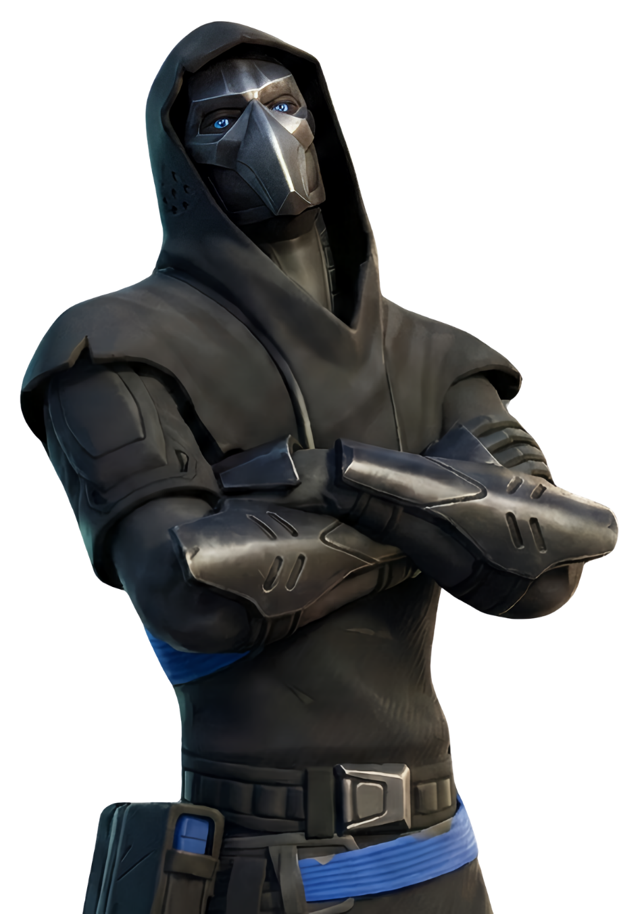

Fusion
// Archives Biographiques
L'Acolyte du Chaos
Agent masqué au service de la Faction Chaos, Fusion agissait en tant qu'homme de main et technicien sous les ordres directs de Sorana. Engagé pour servir les desseins du maître suprême Géno et de l'Institut Onirique, il opérait dans l'ombre pour préparer le terrain à l'invasion de la nouvelle île. Dissimulé derrière son équipement tactique, il exécutait les ordres sans poser de questions, totalement dévoué à la conquête du Point Zéro.
L'Opération Astéria
Déployé sur les terres d'Astéria, Fusion a assisté Sorana dans la construction et la gestion de la base fortifiée au centre de l'île. Sa tâche principale était d'une complexité extrême : calibrer un puissant dispositif à faille destiné à ouvrir un portail dans le ciel. Ce pont dimensionnel devait permettre aux troupes de l'Institut de déferler sur l'île pour s'emparer de l'énergie infinie de l'orbe et instaurer leur ordre parfait.
Une Fin Foudroyante
Alors que la machine était opérationnelle et que la fissure bleutée déchirait le ciel, une onde de choc venue du temple dérégla totalement les coordonnées. La faille vira au violet et une terrible explosion ravagea la base. Retrouvé à terre et secoué par une Sorana en panique, Fusion tenta d'expliquer l'anomalie, mais il était déjà trop tard. La sombre entité cubique apparut devant eux et, avant même que l'acolyte ne puisse contacter l'Institut, elle déchaîna une foudre noire. Les éclairs calcinèrent instantanément ses organes vitaux, laissant son corps sans vie et fumant dans les décombres de sa propre installation.